Insurance restoration
After damage, we walk through the repair scope with you. Together we identify what to restore, what to keep and what you would like to improve.
Residential construction · Winnipeg
Scroll to build
Whether we’re restoring, renovating or building from the ground up, you help shape your home, from the layout to the finishes. If it's a case of insurance, we work for you.
30+years of construction experience
Our services
After damage, we walk through the repair scope with you. Together we identify what to restore, what to keep and what you would like to improve.
We start with the way your family uses each room, from a kitchen that needs more storage to a living room that needs better light.
We work through the plan and finish selections with you, from the insulation in the walls to the flooring underfoot.
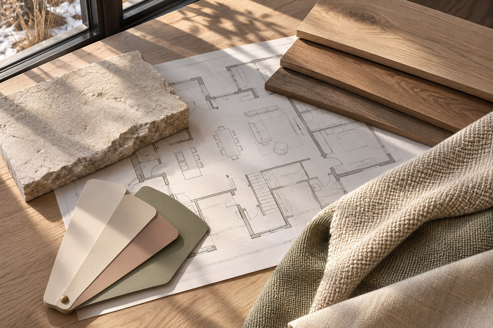
Working with the homeowner
A favourite sofa can set the dimensions of a room. A piece of oak can settle the colour of a kitchen. Tell us what you want to bring back into your home and what you want to change.
You’re welcome to visit as construction progresses. Arrange a walkthrough with us, bring your ideas and point out what you’d change while there’s still time to act on it.
Early on, we can walk the layout, check window positions and mark where your furniture will sit. Before electrical work, we can stand where you’ll cook or read and choose the lights and switches together. Later, compare doors, hardware, paint colours and finish samples in the light of your own rooms.
How upgrades work with an insurance claimInsurance restoration
Rebuilding gives us a chance to address the things you lived with before the damage.
If a room was always cold, we look at the insulation and air sealing while we can still reach them. We review modern insulation, moisture-control details and durable finishes with you so the repaired home can be more comfortable and better built than before.
Quality on site
Explore three checks we can make before the drywall goes on.
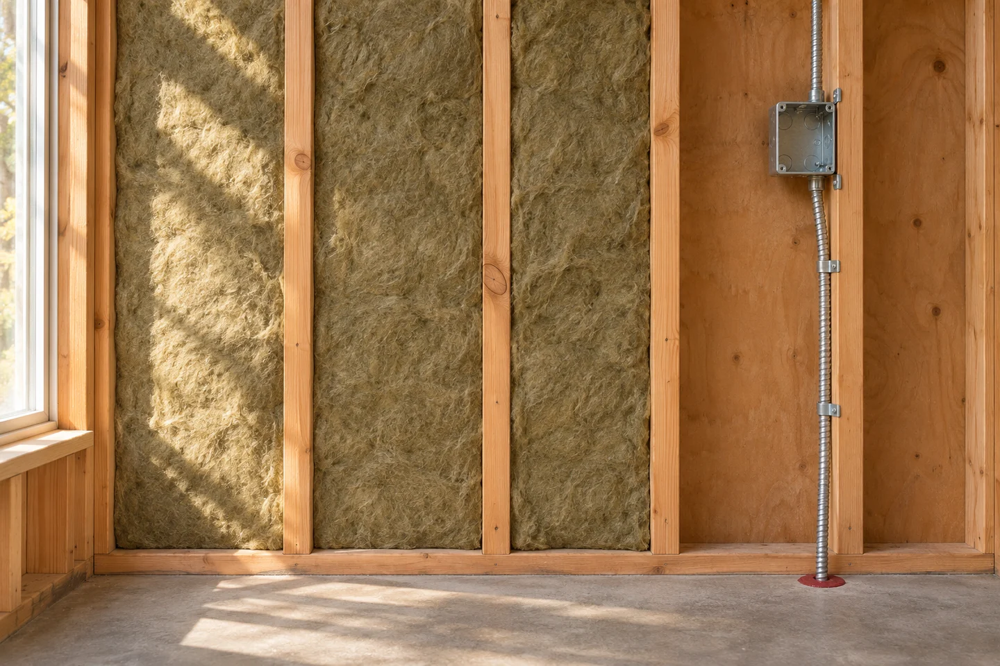
We look along the edges of each batt and around obstructions for gaps or compressed wool. A continuous layer helps keep the room comfortable.
With the outlet box exposed, the electrician can inspect the cable runs, their support and their connections to the box while everything is accessible.
Where cables pass through a fire-rated floor, we check the firestop against the specified assembly before the opening is concealed. This helps preserve the separation between floors.
We exclude materials that pose a known health hazard in their intended residential use. For indoor finishes, we review product information and look for low-emission paints, adhesives and flooring.
We inspect the framing, insulation and air sealing while the work is visible. This is the time to find a gap, check a joint and correct it before the finishes go on.
We check the installation against your selections, including the fit of cabinetry, the alignment of trim and the finish on painted surfaces.
We go room by room with you, review the work against the agreed scope and note anything that still needs attention.
Fire restoration
Three examples of what can be repaired, what can be kept and where the homeowner has a choice.
Explore exterior projects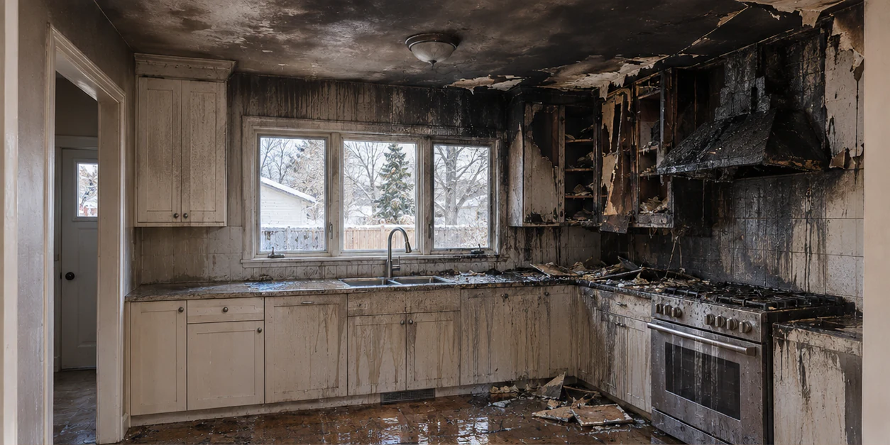
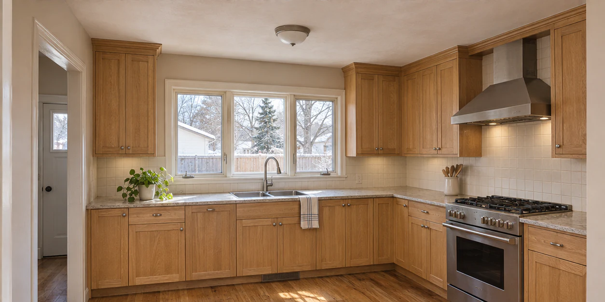
The cooking wall takes the heaviest damage. In this example the sink stays under the window, and new oak cabinetry and a tile backsplash bring the kitchen back into use.
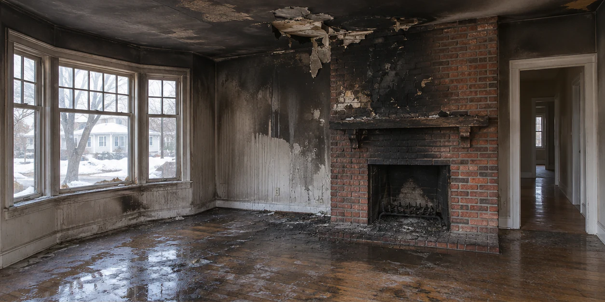
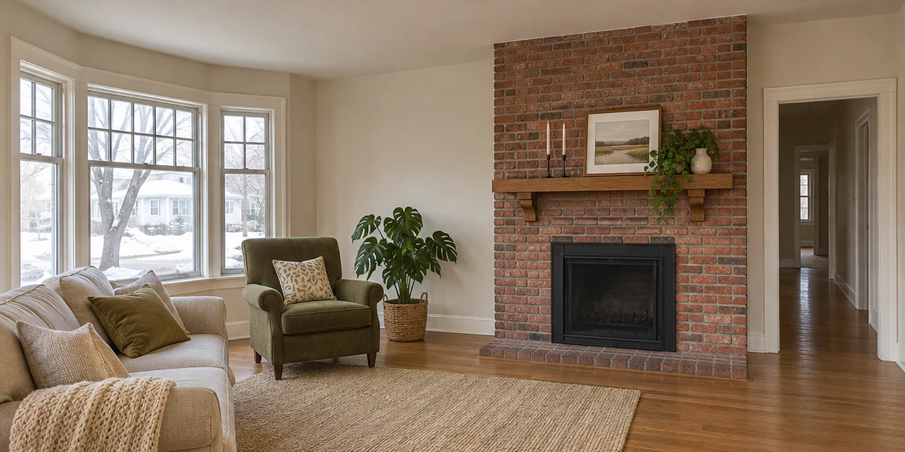
The brick hearth is the feature worth keeping. The example pairs restored masonry with a timber mantel and renewed wall finishes. The bay window still lights the family’s seating area.
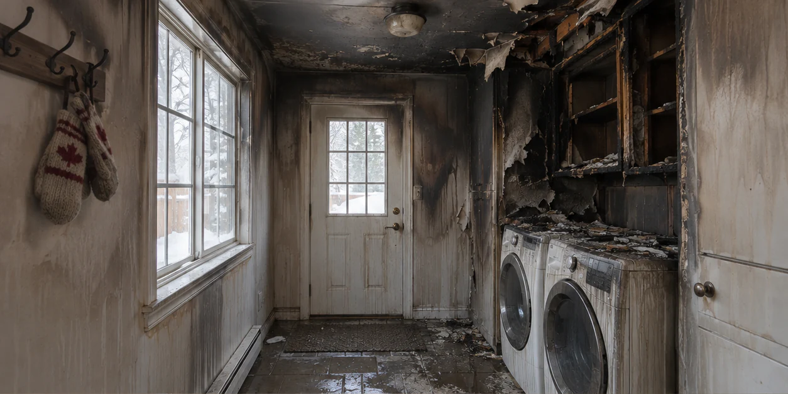
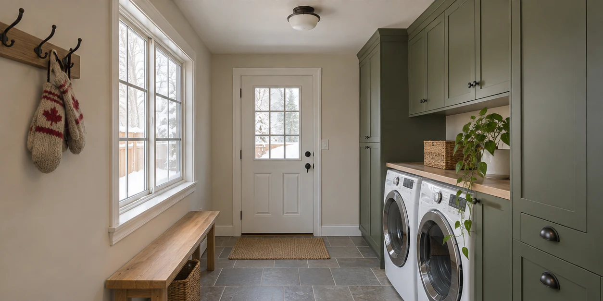
Rebuilding the damaged laundry cupboards creates room for closed storage. A bench below the window gives the family a place to pull off boots without blocking the back door.
Exterior projects
Compare a fire repair, a roof replacement and a new home from the same viewpoint in each pair.
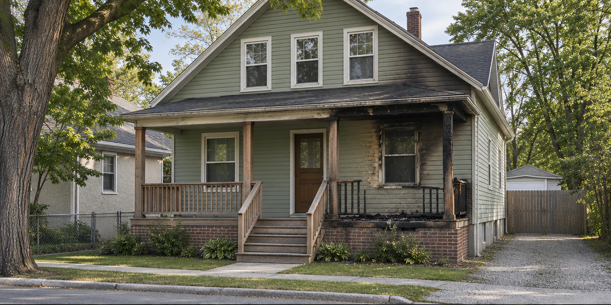
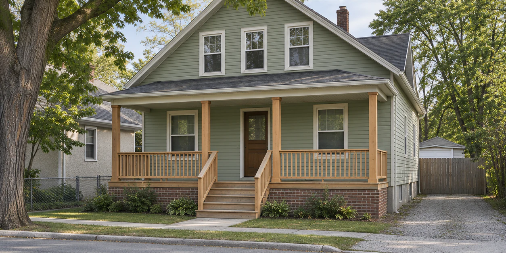
The fire reached the porch and the siding above it. Matching the replacement boards to the original clapboard lets the repaired corner sit naturally alongside the surviving façade.
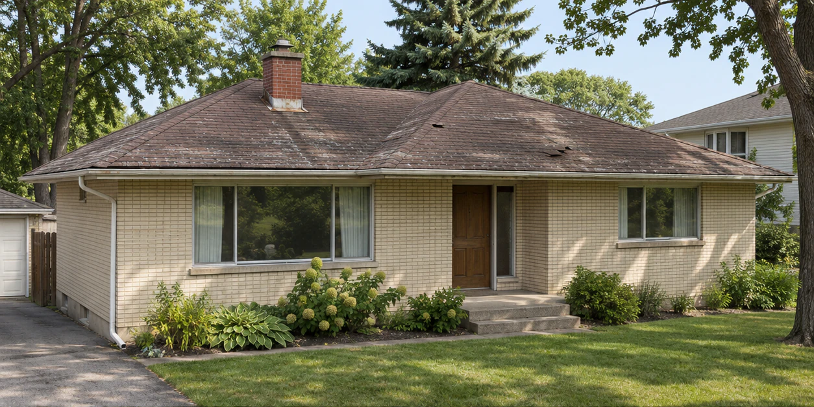
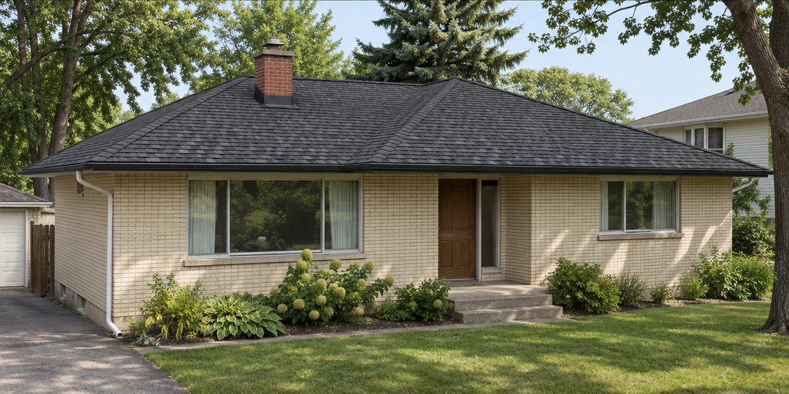
The old shingles show wear across the slope. The new charcoal shingles follow the existing roofline, with fresh flashing where the brick chimney meets the roof.
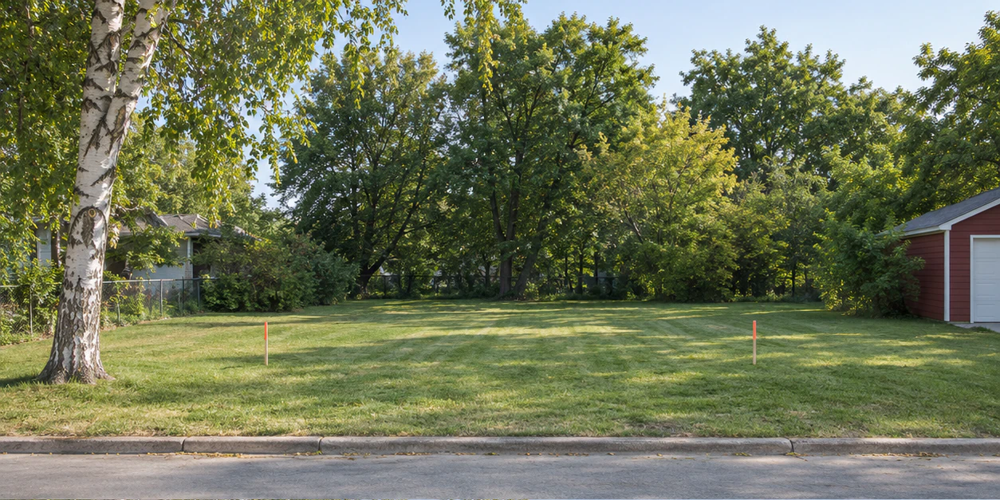
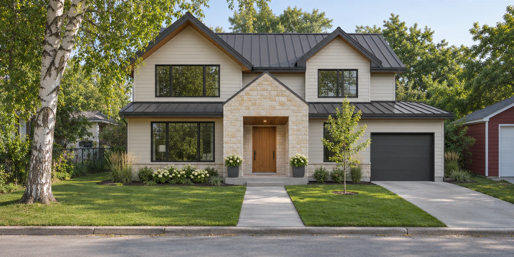
Here the mature trees help set the position of the new house. From the curb you can see how the entry, the garage and the walk fit together on the lot.
Sample scope of work
This unpriced example covers a kitchen damaged by fire. For your home, we review the actual repair scope with you and identify any changes that need a separate quote or approval.
| Work item | Example repair scope | Your decision |
|---|---|---|
| Cooking wall1 wall | Remove damaged cabinets and wall finish around the range. Inspect the exposed wall before closing it. | Walk the open wall with us and review any insulation or air-sealing improvements. |
| Cabinetry & layout2 cabinet runs · 1 sink | Replace affected cabinet runs and reconnect the sink in its existing position. | Choose door style and storage. Review a separate scope if you want to move the sink or change the layout. |
| Lighting & finishes1 fixture · 1 ceiling | Replace the affected light fixture, repair the ceiling and finish the cooking wall. | Select the fixture, backsplash and paint. Confirm any extra lighting before wiring. |
| Handover1 walkthrough | Check cabinet alignment, finishes and fixture operation at a walkthrough. | Try the drawers and switches with us. Record any adjustments together. |
Visit date __________________ Room __________________
What I’d like to keep or change __________________________________________________
Arrange a visit with David Doolan at 204-230-1042 or Michael Samsom at 204-781-5938.
Owners · Prestige Builders
Our team brings 30+ years of construction experience to homes in Winnipeg. Speak directly with either owner about a repair, a plan you’re considering or a visit to your project.